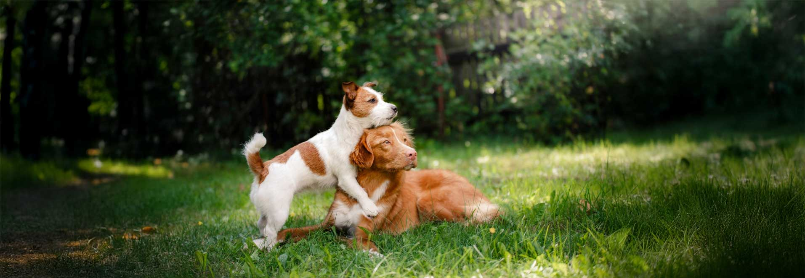
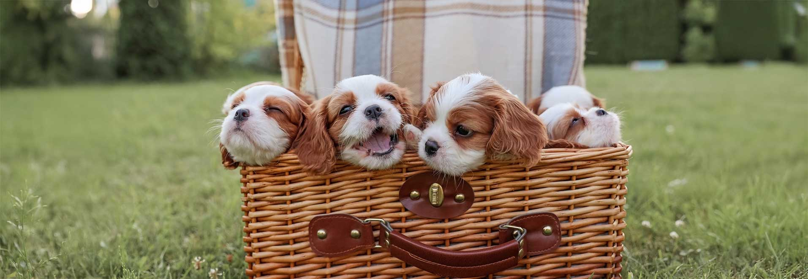

For them, and For You
Adopt a Pet &
Change a Life.

Dogs
A friend for life

Cats
Best Roommate

Like a True Friend – Even a Short Time Can Change Your Life Forever.
Fostering a dog or cat isn’t just a kind act, it’s life-changing. Studies show that pet companionship reduces stress by 55%, lowers depression rates by 40%, and increases physical activity by 69%. Plus, 86% of fosters say it brought more joy and purpose into their lives. You’re not just saving an animal; you’re gaining unconditional love and a happier, healthier you.
We got you, foster here
Every Little Bit Helps. Support Pet Adoption & Rescue.
We know life gets busy, and not everyone can foster or adopt—but your support still changes lives. Every donation, no matter the size, provides food, shelter, and medical care for pets in need. You’re giving them a second chance, a warm bed, and the love they deserve. Once a month we try our absolute best to send our donors pictures of a dog or cat they are helping everyday with their donation. Because you deserve to not only feel it, but see it too.


Donate here, thanks

Meet Our Adoptable Pets – Find Your New Best Friend Today.
Meet out most recent litter:
A Song of Paws and Meows

Ned
Available

Jon
Available

Davos
Available

Jamie
Not Available

Cersei
Not Available

Stannis
Available